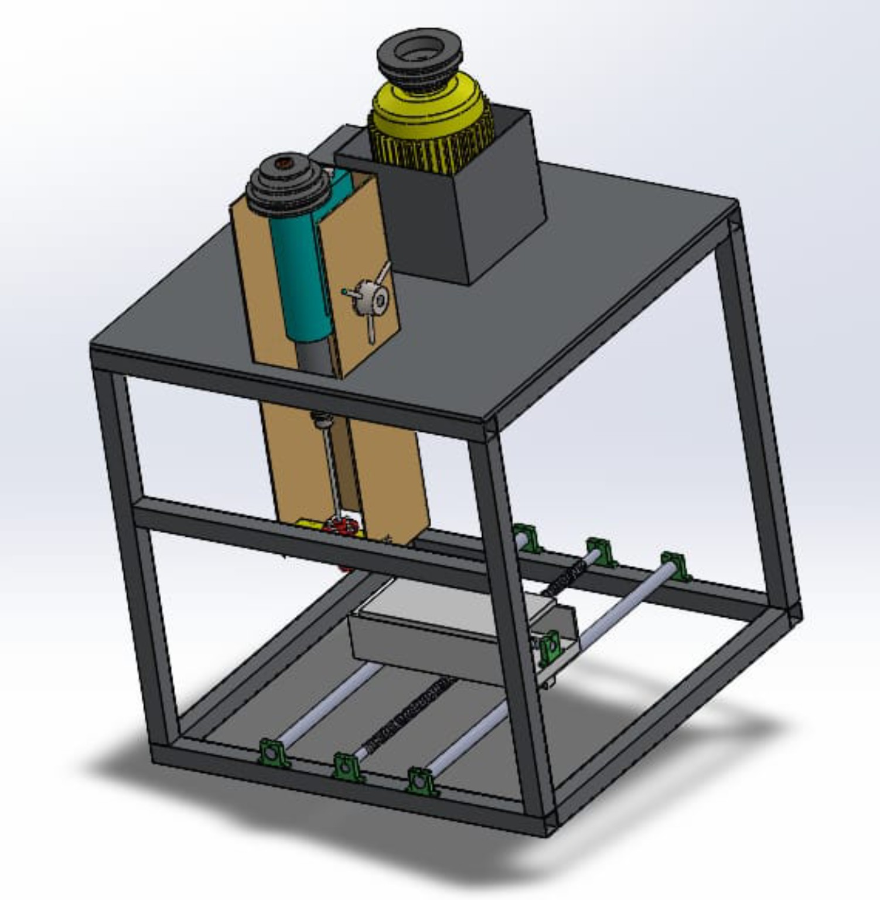
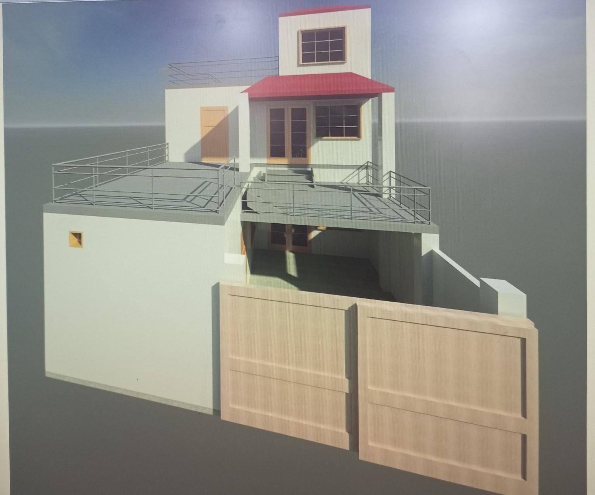

Fins Design Verification under Forced Convection
Verified circular and rectangular fin designs by comparing actual lengths with optimized theoretical lengths for maximum heat-transfer performance.
MECHANICAL DESIGN PORTFOLIO
Mechanical engineering experience across CAD modelling, fabrication, machining, and product development. Precise enough for engineering drawings. Practical enough for manufacturing.

PROFILE / ABOUT
I transform engineering concepts into practical, manufacturable solutions through mechanical design, CAD modelling, engineering drawings, machining preparation, and prototype development.
CAPABILITY STACK
FINAL YEAR PROJECT | DESIGN AND FABRICATION

Manual desktop Additive Friction Stir Deposition machine for AA6061 aluminium, completed at HITEC University Taxila.
The complete mechanical design was developed in SolidWorks. Primary load-bearing components were checked through static structural and vibration analysis before fabrication.
PROFESSIONAL SOLIDWORKS PROJECTS
Mechanical assemblies for drone handling, rotary cleaning equipment, and vehicle-mounted structural systems.
SOLIDWORKS PROJECTS
NUST COLLEGE OF EME | ROBOT MAKER LAB
Internship work covering part and assembly modelling, CNC laser cutting and manufacturing setup, toolpath generation, and NC code.
AUTOCAD PROJECTS

Completed industry-based architectural design work in AutoCAD, including a residential 3D house plan and layout.
Software: AutoCAD
Course: NAVTTC 6-month AutoCAD Diploma
Project Type: Residential 3D house plan and layout
HITEC UNIVERSITY TAXILA
Verified circular and rectangular fin designs by comparing actual lengths with optimized theoretical lengths for maximum heat-transfer performance.
Designed a wind-driven mechanical system for water pumping in agricultural areas using renewable energy instead of conventional power.
Designed and developed a mechanical power-transmission mechanism for demonstration in vibration-analysis experiments.
PROFESSIONAL BACKGROUND
SolidWorks design of drone-handling, rotary-cleaning, and vehicle-mounted systems.
Eight-week internship in design, manufacturing, CNC cutting, and fabrication.
Product design and manufacturing work involving 3D printers.
AutoCAD house plans and SolidWorks mechanical components for client requirements.
EDUCATION & ACHIEVEMENTS
HITEC University Taxila | CGPA 3.18 / 4.00
KRL Institute of Technology Kahuta | 93%
AVAILABLE FOR MECHANICAL DESIGN OPPORTUNITIES
naqeebarshad402@gmail.com · +92 310 5038342 · Rawalpindi, Pakistan